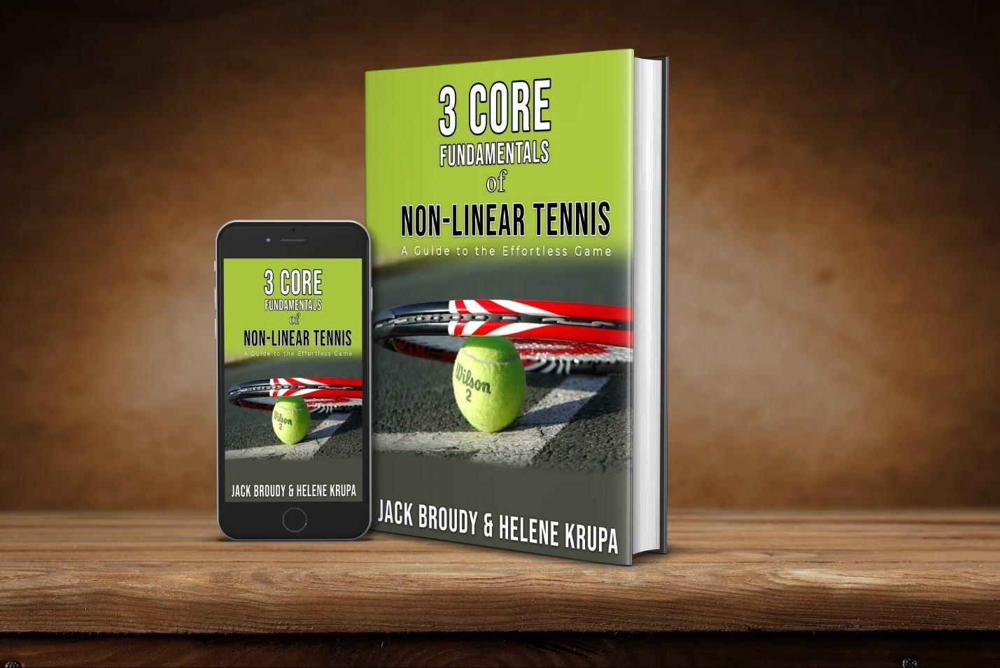

Previous: Forehand Made Easy | 🏠 Famous Coaches Home | Next: Optimize Your Technique – Part 1
Non-Linear Tennis System
Comprehensive unified tennis knowledge base — Fundamentals, Stroke Analysis, Reference Library, and more
Non-Linear Tennis System
Jack Broudy
Jack has a unique (but incredibly effective) teaching methodology called the Non-Linear Tennis System. He teaches every stroke from this foundational principle so players can learn the serve, groundstrokes, and volleys faster and hit the ball effortlessly. Rather than the typical mechanical teaching style most coaches use, Jack believes the body should be fluid and move together for each shot.
Curriculum
Core Fundamental 1: The 45º Angle and Balance Point of the Stroke
HYPERLINK "javascript:void(0);" Core Fundamental 1: Introduction
HYPERLINK "javascript:void(0);" Lesson: Core Fundamental 1: The 45º Angle
HYPERLINK "javascript:void(0);" Lesson: Watch Pros Do It at The 45
Core Fundamental 2: The Figure 8 Full Body Coordination
HYPERLINK "javascript:void(0);" [Fundamental#2] The Figure 8: Introduction
HYPERLINK "javascript:void(0);" [Lesson] How to Do the Figure 8
HYPERLINK "javascript:void(0);" Lesson: Counter Balance and the Extreme Broudy Board Copy
Fundamental 3: Sine Wave of the Arm and Racket (ripple out to the ball)
HYPERLINK "javascript:void(0);" [Fundamental] Core Fundamental 3: Sine Wave
HYPERLINK "javascript:void(0);" Forehand – Fundamentals Review
Serve
HYPERLINK "javascript:void(0);" Serve and the Continental Grip
HYPERLINK "javascript:void(0);" Serve Progression: Essence of the Natural Serve
HYPERLINK "javascript:void(0);" Keeping the Continental Grip (for serve variety)
HYPERLINK "javascript:void(0);" Ball Throwing Motion
Forehand
HYPERLINK "javascript:void(0);" Forehand – Fundamentals Review
HYPERLINK "javascript:void(0);" Forehand: First Lesson – Get Connected and Lined Up
HYPERLINK "javascript:void(0);" The Non-Hitting Hand on the Forehand
HYPERLINK "javascript:void(0);" Bump the Ball
HYPERLINK "javascript:void(0);" Unwind Naturally
HYPERLINK "javascript:void(0);" Big Forehand
HYPERLINK "javascript:void(0);" Forehand: Creating a Coil
HYPERLINK "javascript:void(0);" Compress at Contact
Backhand (one hander)
HYPERLINK "javascript:void(0);" Backhand (One Hand) Fundamentals
HYPERLINK "javascript:void(0);" Backhand Basics: Live Lesson
HYPERLINK "javascript:void(0);" Case Study (live lesson) “Rotation” How to get it
HYPERLINK "javascript:void(0);" Topspin and Slice
HYPERLINK "javascript:void(0);" Backhand with the Rocker and Cobra
Net Play
HYPERLINK "javascript:void(0);" Roundness to “Pop” Your Volleys
HYPERLINK "javascript:void(0);" Inside Out Volleys: “Convex into contact”
HYPERLINK "javascript:void(0);" Overhead Basics: Keep it Simple
HYPERLINK "javascript:void(0);" Volley Line Up and Roundness (live lesson) Copy
Ground Stroke Drills
HYPERLINK "javascript:void(0);" Lesson 10: Inside Out Forehand (Drill)
HYPERLINK "javascript:void(0);" Inside Out Forehand (your first weapon)
HYPERLINK "javascript:void(0);" Lesson 9: Drop Feed (Drill) Copy
HYPERLINK "javascript:void(0);" (Drills) Train with Broudy Board and other Broudy Tools
HYPERLINK "javascript:void(0);" [Drill] “Castles” Knock ’em Down
HYPERLINK "javascript:void(0);" [Drill] 45º Short Court Hustle
HYPERLINK "javascript:void(0);" One Footed Groundstrokes
HYPERLINK "javascript:void(0);" Throw a Basketball for a Bigger Serve
HYPERLINK "javascript:void(0);" Hit a Big Forehands
Net Drills
HYPERLINK "javascript:void(0);" [Drill] Bump Up and Across Volleys
HYPERLINK "javascript:void(0);" (Drills) Train with Broudy Board and other Broudy Tools
HYPERLINK "javascript:void(0);" Quick Volleys (plus overhead)
HYPERLINK "javascript:void(0);" [Drill] La Crosse Training
HYPERLINK "javascript:void(0);" [Drill] The Clacker Drill for Volleys
Serve Drills
HYPERLINK "javascript:void(0);" [Drill] Step & Toss and Serve
HYPERLINK "javascript:void(0);" [Drill] Toss and Catch Serve
HYPERLINK "javascript:void(0);" Serve on your Knees
HYPERLINK "javascript:void(0);" Serve Line Up
HYPERLINK "javascript:void(0);" Serve and the Continental
Off Court Drills
HYPERLINK "javascript:void(0);" [Drill] Two Racket Drills: Clacker and 8
Trick Shots
HYPERLINK "javascript:void(0);" Tweener
HYPERLINK "javascript:void(0);" Drop Shot
HYPERLINK "javascript:void(0);" Sabre
Quick Fixes for common errors
HYPERLINK "javascript:void(0);" Forehand Fixes
HYPERLINK "javascript:void(0);" One Hand Backhand Fixes
HYPERLINK "javascript:void(0);" Two Hand Backhand Fixes
HYPERLINK "javascript:void(0);" Serve Fixes
Volleys and Overhead

Jack Broudy from Broudy Tennis. Jack is a tennis player, coach, author, speaker, and inventor. He’s coached college national champions, top US juniors, and touring pro players including Sam Querrey, Steve Johnson, and Coco Vandeweghe when they were rising juniors.
Source: tennisplayer.net archive — Non-linear tennis system.docx (John Yandell teaching library, 2002-2022). Extracted and rendered as HTML for Tennis Future Lab.